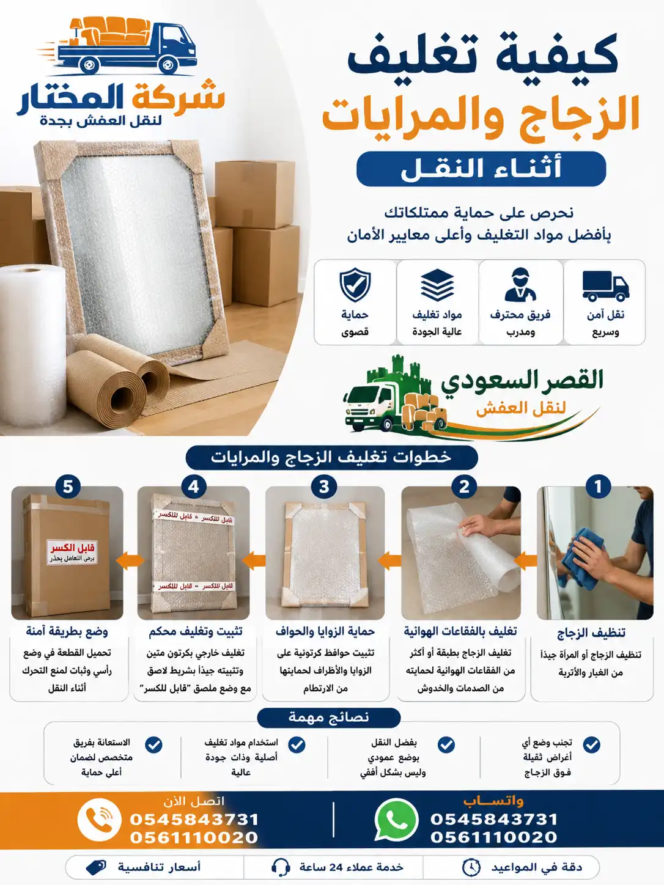

دليل شامل لحماية الزجاج والمرايا والزجاجيات من الكسر أثناء عملية نقل العفش
تعتبر الزجاجيات والمرايا من أكثر الأشياء حساسية وهشاشة أثناء عملية نقل العفش. كسر قطعة زجاجية ثمينة أو مرآة كبيرة يمكن أن يكون مكلفاً ومحبطاً. لذلك، تعلم كيفية تغليف الزجاج والمرايا بشكل صحيح هو أمر ضروري لكل من يخطط للانتقال إلى منزل جديد.
في شركة المختار لنقل العفش، نمتلك خبرة طويلة في تغليف وحماية الزجاجيات بجميع أنواعها وأحجامها. من المرايا الكبيرة التي تزين غرف المعيشة، إلى الأواني الزجاجية الصغيرة والتحف الثمينة، لدينا الطرق الصحيحة والمواد المناسبة لضمان وصولها سليمة 100%. يتطلب تغليف الزجاج عناية خاصة وخطوات دقيقة سنشرحها بالتفصيل في هذا الدليل. خدمات التغليف الاحترافية التي نقدمها تضمن لك راحة البال التامة.
تولي شركة المختار لنقل العفش اهتمامًا كبيرًا بعمليات تغليف المرايات والزجاج أثناء النقل، حيث نعتمد على مواد حماية عالية الجودة وأساليب تغليف احترافية تقلل من احتمالية الكسر أو الخدوش. سواء كانت لديك مرايا كبيرة، واجهات زجاجية، أو قطع ديكور ثمينة، فإن فريقنا المتخصص يطبق أفضل الطرق لضمان نقلها بأمان تام. كما توفر خدمات تغليف العفش والزجاج التي نقدمها أعلى مستويات الحماية، مما يساعد على وصول جميع القطع بحالتها الأصلية. ويمكنك التعرف على المزيد من خلال خدمات التغليف والنقل الاحترافية التي نوفرها لعملائنا في جدة وجميع مدن المملكة.

وفقاً لدراسات حديثة، أكثر من 70% من أضرار الزجاج والمرايا أثناء النقل تحدث بسبب سوء التغليف وليس بسبب حوادث النقل نفسها. التغليف الصحيح يمكن أن يقلل خطر الكسر بنسبة تصل إلى 95%.
اختيار مواد التغليف المناسبة هو أول خطوة نحو حماية الزجاج والمرايا. خدمات تغليف العفش المتخصصة تستخدم مواد عالية الجودة لا تتوفر دائماً في المنزل. إليك أفضل المواد المستخدمة:
أهم مادة لتغليف الزجاج. يفضل استخدام النوع ذو الطبقات المتعددة والفقاعات الكبيرة (حجم فقاعة 10 مم) للحصول على حماية فائقة ضد الصدمات.
صناديق كرتونية بقوة مضاعفة، مصممة خصيصاً لحمل الأغراض الثقيلة والهشة. يجب استخدامها بدلاً من الكراتين العادية.
ألواح رقيقة من الفوم توضع بين طبقات الزجاج لمنع الاحتكاك. مثالية لتغليف الأطباق الزجاجية المرصوصة فوق بعضها.
يجب استخدام شريط لاصق قوي لتثبيت البلاستيك الفقاعي وإغلاق الصناديق. تجنب الأنواع الرخيصة التي تفقد لزوجتها.
تحمي زوايا المرايا واللوحات الزجاجية من الصدمات المباشرة. توضع على الأطراف قبل التغليف بالبلاستيك الفقاعي.
ملصقات "زجاج - هش - يتطلب عناية" توضع على جميع جوانب الصندوق لتنبيه عمال النقل بالتعامل بحذر شديد.
لا تستخدم أبداً الجرائد أو الورق العادي كبديل للبلاستيك الفقاعي. الورق لا يوفر حماية كافية ضد الصدمات وقد يسبب وخزاً أو اتساخاً على الزجاج. للحصول على أفضل النتائج، استخدم مواد احترافية. اقرأ المزيد عن مواد تغليف العفش.
اتبع هذه الخطوات المنهجية لتغليف الزجاج والمرايا بشكل صحيح وآمن:
قم بتنظيف سطح الزجاج أو المرآة جيداً من الأتربة والغبار. اتركه حتى يجف تماماً. الرطوبة قد تتسبب في التصاق مواد التغليف بالزجاج وترك علامات.
ضع شريطاً لاصقاً بشكل متقاطع على سطح المرآة لتثبيت الزجاج في حال انكساره. هذه الخطوة تمنع تطاير شظايا الزجاج.
لف القطعة بالكامل بطبقة أو طبقتين من البلاستيك الفقاعي مع توجيه الفقاعات للداخل (نحو الزجاج). ثبت الأطراف بشريط لاصق.
ثبت الزوايا الكرتونية أو البلاستيكية على الأطراف، ثم لف القطعة بطبقة إضافية من البلاستيك الفقاعي.
للقطع الصغيرة، استخدم كرتون مزدوج الجدران وضع الزجاج في وضع عمودي (وليس مسطحاً). للمرايا الكبيرة، ثبتها على لوح خشبي لحمايتها من الانحناء.
اسد أي فراغات داخل الصندوق باستخدام الورق المجعد أو الفوم أو قطع البلاستيك الفقاعي. منع حركة الزجاج داخل الصندوق أمر بالغ الأهمية.
بعد إغلاق الصندوق، قم بهزه برفق. إذا سمعت أي صوت أو شعرت بحركة، فهذا يعني أن الزجاج ليس ثابتاً بشكل كافٍ. افتح الصندوق وأضف المزيد من مواد الحشو.
المرايا الكبيرة تحتاج إلى طريقة تغليف خاصة ومختلفة عن الزجاجيات الصغيرة. هذه طريقة احترافية نستخدمها في خدماتنا:
لا تحاول أبداً نقل مرآة كبيرة في وضع مسطح (أفقي) دون تثبيتها على لوح خشبي. الضغط الناتج عن وزنها قد يتسبب في تشققها أو تكسرها. اقرأ المزيد عن حماية الأثاث أثناء النقل.
تتطلب الأواني الزجاجية الصغيرة مثل الأطباق والأكواب والكريستال عناية فائقة. إليك أفضل الطرق لتغليفها:
ضع طبقة من ألواح الفوم أو مناشف المطبخ النظيفة بين كل طبق وآخر. ثم لف كل 3-4 أطباق معاً بالبلاستيك الفقاعي. رصها عمودياً داخل الصندوق، وليس مسطحاً.
لف كل كأس على حدة بالبلاستيك الفقاعي مع التركيز على حماية الساق (الكأس الطويل). ضع الكؤوس باتجاه أعلى داخل الصندوق مع فواصل كرتونية بينها.
تحتاج القطع الكريستالية إلى طبقة إضافية من الحماية. استخدم صندوقاً صغيراً واملأه بالكامل بمواد التغليف بحيث لا تتحرك القطعة مطلقاً.
لا ترص الزجاجيات في صندوق واحد بوزن كبير جداً. الصندوق الذي يحوي زجاجيات يجب ألا يتجاوز وزنه 10-15 كجم. تقسيم الزجاجيات على عدة صناديق أصغر يقلل من خطر الكسر.
| المادة | مستوى الحماية | السعر التقريبي | الاستخدام الأمثل |
|---|---|---|---|
| بلاستيك فقاعي 3 طبقات | ⭐⭐⭐⭐⭐ عالي جداً | مرتفع | مرايا كبيرة، زجاجيات ثمينة |
| بلاستيك فقاعي طبقة واحدة | ⭐⭐⭐ متوسط | منخفض | زجاجيات صغيرة للأغراض العادية |
| كرتون مزدوج الجدران | ⭐⭐⭐⭐⭐ عالي جداً | مرتفع | جميع أنواع الزجاجيات |
| كرتون عادي | ⭐⭐ ضعيف | منخفض جداً | لا يُنصح للزجاجيات |
| ألواح الفوم | ⭐⭐⭐⭐ عالي | متوسط | بين طبقات الأطباق واللوحات |
| الجرائد | ⭐ ضعيف جداً | مجاني | غير مناسب للزجاجيات على الإطلاق |
الاستثمار في مواد تغليف عالية الجودة مثل البلاستيك الفقاعي ثلاثي الطبقات والكرتون المزدوج قد يبدو مكلفاً في البداية، لكنه أرخص بكثير من تكلفة استبدال قطعة زجاجية أو مرآة ثمينة. قارن بين خدمات شركات النقل لتجد الأفضل.
قد يترك بقايا لاصقة أو يتسبب في تلف الزجاج. ضع البلاستيك الفقاعي أولاً.
عند تحميل الشاحنة، ضع صناديق الزجاجيات فوق الصناديق الثقيلة وليس تحتها.
اكتب "زجاج - أعلى - هش" على جميع جوانب الصندوق. لا تكتف بجانب واحد فقط.
استخدم صناديق صغيرة للزجاجيات. الصناديق الكبيرة تسمح بحركة أكثر ويزداد وزنها.
لا تستخدم كراتين قديمة أو تالفة لحمل الزجاج. ضعف الكرتون هو سبب رئيسي للكسر.
للتأكد بنسبة 100%، يمكنك الاستعانة بـ خدمات تغليف احترافية.
لا يُنصح باستخدام الجرائد أو الورق العادي لتغليف الزجاج لأنها لا توفر حماية كافية ضد الصدمات، وقد تترك حبراً على الزجاج. الأفضل هو استخدام البلاستيك الفقاعي أو ألواح الفوم.
ننصح بالاستعانة بشخص آخر أو شركة متخصصة. إذا اضطررت لنقلها بمفردك، فقم بتغليفها جيداً بالبلاستيك الفقاعي، وتثبيتها على لوح خشبي، ثم انقلها في وضع عمودي. يمكنك الاستعانة بـ خدمات تغليف احترافية لتسهيل المهمة.
للأغراض العادية، طبقتان كافيتان. للقطع الثمينة أو الكبيرة، استخدم 3-4 طبقات من البلاستيك الفقاعي عالي الجودة للحماية القصوى.
نعم، ضع ملصقات "زجاج - هش - يتطلب عناية" على جميع جوانب الصندوق (أعلى، أسفل، جوانب) لتنبيه عمال النقل في جميع الاتجاهات.
نعم، شركة المختار تقدم خدمة تغليف احترافية للزجاج والمرايا باستخدام أفضل المواد وأحدث التقنيات لضمان وصولها سليمة.
ضع طبقة من ألواح الفوم بين كل طبق وآخر، ثم لف كل 3-4 أطباق معاً بالبلاستيك الفقاعي. رص الأطباق في وضع رأسي (عمودي) داخل الصندوق، وليس مسطحاً.
بعد إغلاق الصندوق، قم بهزه برفق. إذا شعرت بأي حركة أو سمعت صوتاً، فهذا يعني أن الزجاج ليس ثابتاً. أضف المزيد من مواد الحشو (الورق المجعد، الفوم، البلاستيك الفقاعي) حتى يصبح ثابتاً تماماً.
يمكن نقل المرايا الصغيرة في السيارة بشرط أن تكون موضوعة بشكل آمن بحيث لا تتحرك. المرايا الكبيرة تحتاج إلى سيارة نقل مجهزة أو شاحنة مخصصة. تعرف على سيارات نقل العفش المجهزة.
اتصل بشركة المختار – أفضل شركة تغليف ونقل عفش في جدة – لتحصل على خدمة تغليف احترافية تضمن سلامة زجاجك ومراياك.
معاينة مجانية – أسعار شفافة – ضمان على الخدمة